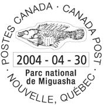

BP Nouvelle pictorial cancel
Parc national de Miguasha · Fossil
- Status
- Expired
- Run dates
- 2004-01-01 to ?
- Design
- "Parc national de Miguasha"; fossil, fish
- Ink colour
- Black
- Designer
- Unknown
- Post office
- BP Nouvelle
91 Rue Maguire
Nouvelle, QC
G0C 2E0 - Subjects
- fossil, fish, national park
This cancel is retired, so the post office can no longer apply it. Covers with it turn up from dealers and other collectors.
 BP NouvelleLogo
BP NouvelleLogo BP Ste-Luce Succ Sur MerEmpress of Ireland / 1914-2014
BP Ste-Luce Succ Sur MerEmpress of Ireland / 1914-2014 BP Saint-Jean-de-DieuConstruit en 1963 / Built in 1963
BP Saint-Jean-de-DieuConstruit en 1963 / Built in 1963 Rivière-du-Loup Bureau-ChefCapital de Noël! 1er week-end de novembre
Rivière-du-Loup Bureau-ChefCapital de Noël! 1er week-end de novembre BP TadoussacWhale
BP TadoussacWhale